Base respirável: chão, parede alta, porta e Dispersor de O₂
- A parede continua grossa (padrão do jogo). O que mudou foi a porta: saíram os batentes de 5 px que comiam a passagem. Agora a porta é só uma moldura fina (jambas de 2 px e a travessa) na borda de fora da parede, e a folha some dentro da parede ao abrir. Aberta, o vão fica com 28 px livres na solo e 60 px na dupla.
- Dois tipos: a porta solo (1 tile, uma folha que corre pra esquerda) e a porta dupla (2 tiles lado a lado, duas folhas que abrem do meio pros lados, com a emenda em degrau na junção dos tiles). Ambas na horizontal e na vertical, 4 quadros, na linguagem airlock (grafite, X em relevo, travessa laranja e LED).
- Posição: variante B (folha rente à face de fora da parede), a recomendada. A A não foi refeita.
- A parede ao lado da porta agora mostra a ponta dela (a porta não emenda no desenho da parede; continua contando como parede pra vedação). É isso que emoldura o vão.
- A porta fina A/B da v1.1 e a grossa da v1.0 estão no bloco "anterior", no fim da seção da porta.
- Aprovado: chão, parede alta com autotile, Dispersor (com a tira âmbar de vazamento, que entra), aviso de vazamento e ícones. Decidido: a parede não emenda com a rocha, o chão é igual nos 3 estágios e a parede de baixo cobrir a última fileira está ok.
- Porta refeita, FINA: airlock de 2 folhas de metal grafite (3 px de espessura) encostadas numa borda da parede, com a emenda em degrau no meio, o X em relevo em cada folha e a moldura de metal claro (batentes finos e a travessa com a faixa laranja e o LED). O resto do tile é soleira com o trilho, entre os batentes bege que emendam com a parede. As folhas deslizam pros lados a partir do meio.
- Duas variantes pra escolher: A = folha na borda de dentro da base; B = folha na borda de fora. Os sprites são os mesmos 4 (um por borda); a variante é só a regra de qual borda usar.
- A porta grossa da v1.0 ficou em
anterior/pra comparar, no fim da seção da porta.
- Parede ALTA estilo Core Keeper, na mesma geometria da parede de rocha do jogo: o bloco ocupa o tile e tem 24 px de altura. O topo (32×32) sobe 24 px por cima do tile de trás e a face (32×24) aparece embaixo quando o vizinho de baixo não é parede. Total na tela: 56 px (24 + 32). Usa o raio-x que já existe, sem mudar nada nele.
- Autotile do topo no layout A2 (o mesmo do
water_auto, que ogame/autotile.pyjá monta): 47 combinações com quinas externas, internas, T, cruz, pontas e peça isolada. A face tem 4 peças (pontas abertas ou emendadas dos lados). - Chão construído: chapa de aço azulada de valor médio, 4 variações. Não muda com o estágio (é construído).
- Porta nas 2 orientações, 4 quadros (fechada → aberta). Refeita na v1.1.
- Dispersor de O₂, da família r3d (sapata B, bege, faixa laranja): soprando, parado e (opcional) vazamento.
- Aviso de vazamento: uma "parede-fantasma" vermelha piscando no tile que falta, por cima de tudo.
- 4 ícones novos. O da cápsula de água já estava aprovado e não foi mexido.
Base pronta nas 3 paletas
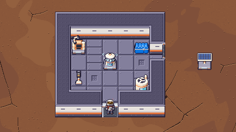
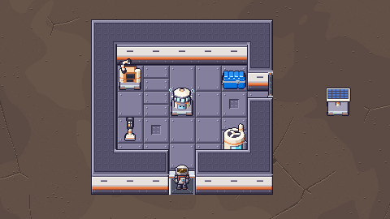
Recortes 480×270 (metade da tela), montados só com os sprites, na ordem do jogo. Base com 5×4 de chão por dentro, porta na parede de baixo (horizontal) e na da direita (vertical), o Dispersor no meio soprando, a Bancada T2, o baú, a luminária e o O₂ nv.1 em cima do chão, o painel solar fora. Repare no O₂ do canto de baixo: o topo da parede de baixo cobre o pé dele, igual a parede de rocha faz hoje (é o "alto" do Core Keeper).
Raio-x: o player atrás da parede
_draw_player_silhouette de hoje)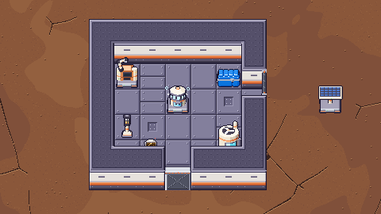
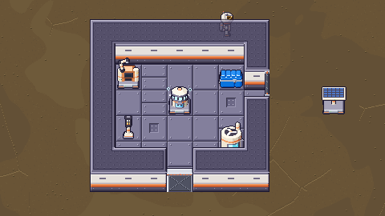
Vazamento: o tile furado pisca
leak_blink.png · 6× animado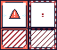
É uma parede-fantasma do tamanho do bloco (topo + face), com a cantoneira e a hachura vermelhas, o triângulo de alerta e as setinhas de ar saindo. Desenhada por cima de tudo, então lê em cima de chão, de vazio e até quando a parede de baixo cobre o tile.
Porta solo e porta dupla
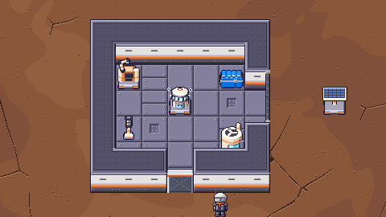
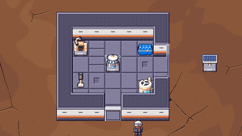
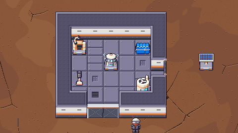
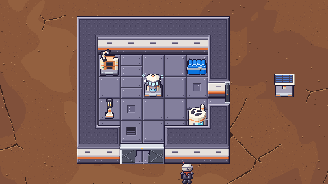
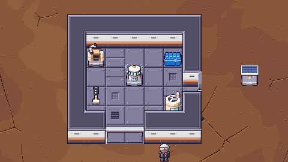
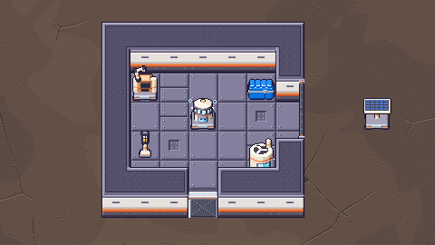
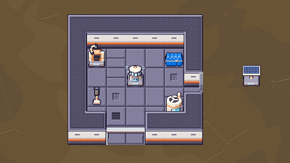
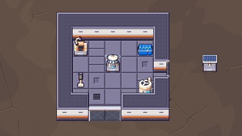
Solo · base_door_{h_n,h_s,v_w,v_e}.png · 128×56 (4 quadros de 32×56)
h_s · horizontal, folha na borda sul · 6×v_e · vertical, folha na borda leste · 6×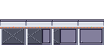
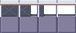
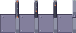
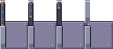
Dupla · base_door2_{h_n,h_s,v_w,v_e}.png · 256×56 (metade 1: quadros 0–3; metade 2: quadros 4–7)
h_s · as 2 metades lado a lado · 6×v_e · metade de cima e a de baixo (32 px abaixo) · 6×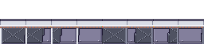
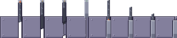
Como abrem: a solo corre pra esquerda na horizontal. Na vertical, "esquerda" não existe pra câmera (ela vê a parede de lado), então decidi uma regra só: a folha da solo sempre corre pro lado de menor coordenada, oeste na horizontal e norte na vertical. Na tela, a folha da vertical sobe e entra na parede de trás (que é desenhada antes), o que lê bem como "sumiu dentro da parede". A dupla abre do meio: na horizontal cada folha vai pro seu lado (oeste e leste) e na vertical a de cima sobe e a de baixo desce (entra embaixo do topo da parede de baixo).
Limite da vertical (igual antes): a câmera vê essa parede de lado, então da folha só aparece o topo, uma faixa grafite de 4 px com as pontas laranja (e o degrau, na dupla). O X e a travessa só aparecem na horizontal.
anterior · v1.1 porta fina A/B e v1.0 porta grossa (reprovadas)
v1.1: airlock fina com batentes de 5 px dos dois lados (vão de 22 px, apertado). A = folha por dentro, B = por fora.
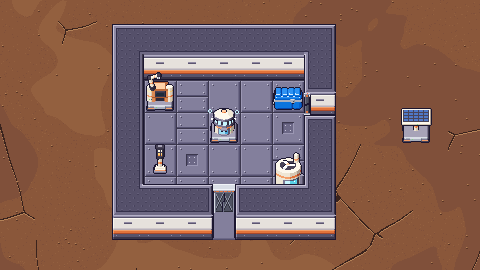
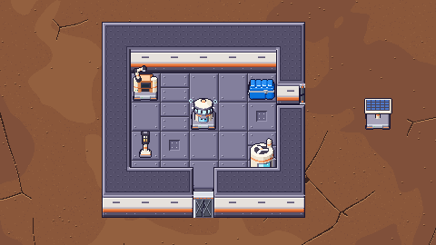
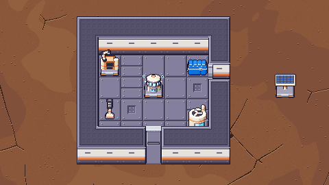
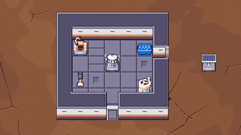
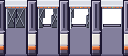
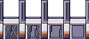
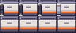
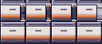
v1.0: a porta grossa, que ocupava o bloco inteiro.
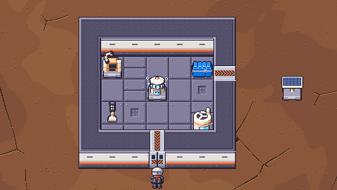
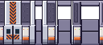
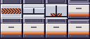
Dispersor de O₂
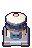
machine_o2_dispenser.png · grade apagada, LED vermelho

Corpo bege baixo com a cápsula de água encaixada na janela da frente (a mesma água azul do ícone da cápsula), faixa laranja e a grade difusora acesa em ciano por onde o ar sai em volta toda, com o chapéu por cima. Pra não confundir com o gerador de O₂ (tanque alto com ventoinha), ele é baixo e largo, do tamanho do baú.
Chão
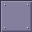
base_floor_0.png · lisa (metade dos tiles)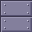
base_floor_1.png · emendada (1/4)base_floor_2.png · grelha de ventilação (1/8)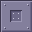
base_floor_3.png · tampa de inspeção (1/8)Aço azulado de valor médio, com chanfro (luz de cima-esquerda) e rebites. Contrasta pela cor com o vermelho do
Árido e o verde, e pelo valor e pela temperatura com o cinza-marrom escuro da Névoa. Máquina em cima lê bem (o bege
das máquinas é bem mais claro). Sorteio sugerido por hash do tile:
(tx·73856093 ^ ty·19349663) & 7 → 0,0,0,0,1,1,2,3.
Parede alta
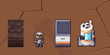
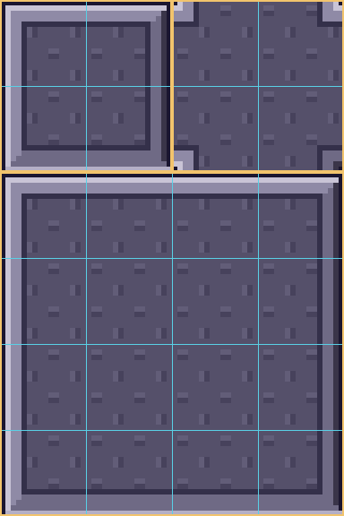
base_wall_top.png 64×96 · 6× · grade de minitiles 16×16 · layout A2base_wall_face.png 128×24 · peças 0 · 1 · 2 · 3 (índice = W + 2·E)Topo: chapa ardósia escura (o "telhado" do muro, mais escuro que o chão pra ler como
altura), aba clara nas bordas de cima e da esquerda, escura nas de baixo e da direita, um sulco e o miolo
antiderrapante. A borda de baixo do topo é uma aba clara: é o encontro com a face. Face: trilho, painel bege da
família das máquinas, um respiro por tile, a faixa laranja #e2733a e o rodapé escuro com rebites, escurecendo pro pé.
Nada de junta vertical repetida.
Tabela de autotile (47 combinações)
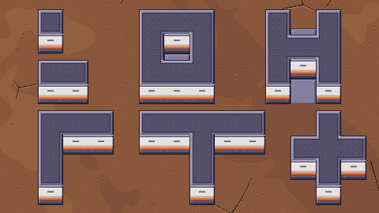
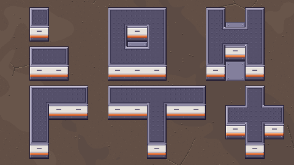
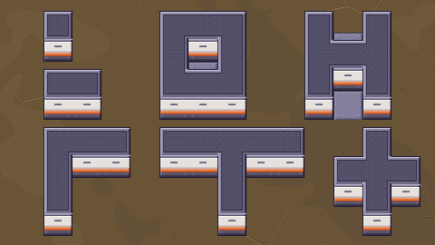
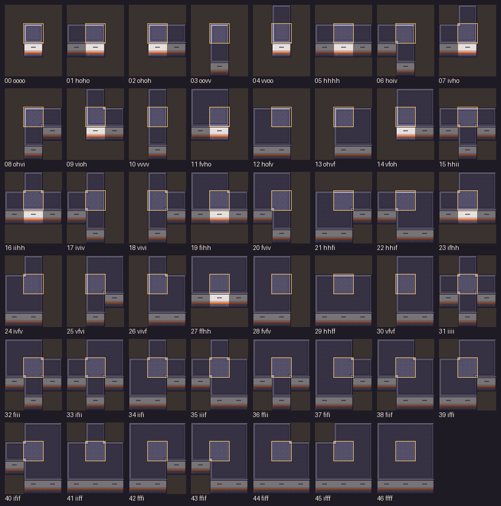
A regra de índice (a mesma do game/autotile.py)
conn(x, y) = o tile é parede da base (rocha não conta; desde a v1.2 a porta também não conta no desenho). Cada tile de parede é montado
com 4 quadrantes 16×16 (TL, TR, BL, BR). Cada quadrante olha 3 vizinhos: o do lado (esquerda ou direita), o vertical
(cima ou baixo) e a diagonal entre eles:
| lado | vertical | diagonal | peça |
|---|---|---|---|
| não | não | – | canto externo (outer) |
| sim | não | – | borda horizontal (hedge) |
| não | sim | – | borda vertical (vedge) |
| sim | sim | não | canto interno (inner) |
| sim | sim | sim | miolo (full) |
Os 4 quadrantes em outer = peça isolada (bloco 0,0–32,32). Minitile (coluna, linha) de cada peça no
atlas:
| quadrante | outer | hedge | vedge | inner | full | isolada |
|---|---|---|---|---|---|---|
| TL | (0,2) | (2,2) | (0,4) | (2,0) | (2,4) | (0,0) |
| TR | (3,2) | (1,2) | (3,4) | (3,0) | (1,4) | (1,0) |
| BL | (0,5) | (2,5) | (0,3) | (2,1) | (2,3) | (0,1) |
| BR | (3,5) | (1,5) | (3,3) | (3,1) | (1,3) | (1,1) |
Em código: autotile.sources(autotile.tile_key(conn, tx, ty)) já devolve isso; é só trocar o atlas da
água pelo base_wall_top.png. Face: idx = conn(x−1, y) + 2·conn(x+1, y) → recorte
(idx·32, 0, 32, 24) do base_wall_face.png (0 = as duas pontas abertas, 1 = emenda à
esquerda, 2 = emenda à direita, 3 = emenda dos dois lados).
Ícones
icon_base_floor.png · 16×16 · chapa do chãoicon_base_wall.png · 16×16 · bloco de paredeicon_base_door.png · 16×16 · porta soloicon_base_door_double.png · 16×16 · porta duplaicon_o2_dispenser.png · 16×16 · Dispersor de O₂Pro Dev integrar
- Nada disso entra sem o ok do dono. Os PNGs estão em
reports/design/v05_m2_base/pendentes/, com os nomes prontos proassets/sprites/. Ids sugeridos:base_floor,base_wall,base_door(solo),base_door_double,o2_dispenser. - Chão
base_floor_{0..3}.png32×32 em (x, y), na passada do chão (embaixo de tudo). Variação pelo hash acima. - Parede, igual ao
_draw_wall: topo montado dos 4 minitiles dobase_wall_top.pngem (x, y − 24) (C.WALL_LIFT); senot conn(x, y + 1), face 32×24 em (x, y + 8) (FACE_Y). Altura do bloco: 24 px; ocupa na tela de y − 24 a y + 32 (56 px). Os sprites já trazem o contorno: não precisa dooutline_h/v. Colisão: o tile inteiro. - Ordem de desenho: a parede da base entra na mesma vez das paredes da linha (antes dos objetos com o pé
naquela linha). Na superfície, onde a linha vira a tira de morro (
hill_rows), o jeito simples é pôr cada parede/porta da base nocollect_objectscomay = ty·32 + 1: cai na linha certa e é o primeiro da linha. - Raio-x: no
player_occluded, a linha de baixo também conta parede da base e porta fechada ou abrindo (quadros 0–1). Porta nos quadros 2–3 não acende (a passagem está aberta). - Parede × porta no desenho: no autotile e na face da parede,
conn= só parede da base. A porta não conta (a parede ao lado mostra a ponta, que emoldura o vão). Pra vedação e pro raio-x a porta conta como parede. - Portas (v1.2): todo tile de porta desenha um quadro de 32×56 em (x, y − 24), na vez das paredes da linha
(ou como objeto com
ay = ty·32 + 1). O quadro traz moldura, folha e soleira; o tile da porta não desenha chão à parte. Abre com o player a ≤ 1,5 tile do tile (ou de qualquer tile da dupla): 0 → 3 a ~12 fps, fica no 3, volta 3 → 0 quando ele sai. Raio-x: quadros 0–1 contam como parede.- Orientação:
hse a porta está numa parede horizontal (vizinhos a oeste/leste são parede ou porta);vse norte e sul são parede ou porta e os lados não. Na dupla, é o eixo das 2 metades (lado a lado = h, uma em cima da outra = v). - Borda (variante B): a borda de fora = o lado oposto ao chão da base (o flood fill do Dispersor sabe).
h: chão ao norte →
h_s, chão ao sul →h_n. v: chão a oeste →v_e, chão a leste →v_w. Porta solta (sem base):h_s/v_e. - Solo
base_door_{o}_{e}.png128×56: quadro k em(k·32, 0, 32, 56). - Dupla
base_door2_{o}_{e}.png256×56: metade 1 (oeste na h, norte na v) no quadro k em(k·32, 0); metade 2 (leste/sul) em((4 + k)·32, 0). As 2 metades sempre no mesmo quadro.
- Orientação:
- Dupla no construtor: é um item só que ocupa 2 tiles. O fantasma mostra 2×1 ou 1×2; o R gira (h ↔ v), e também dá pra sugerir a orientação pela parede embaixo do cursor. A âncora é a metade 1 (o tile de oeste/norte); a outra metade é o vizinho (+1 em x na h, +1 em y na v). Só coloca se os 2 tiles estão livres (ou são parede da base no lugar da qual ela entra, se o Dev quiser substituir). É um objeto só no save (tile da metade 1 + orientação); desmontar qualquer metade tira as duas e devolve 1 receita. Pro flood fill, os 2 tiles são porta.
- Colisão (x, y = canto do tile; dupla h: x = tile da metade 1, a porta vai até x + 64; dupla v: até y + 64):
As jambas de 2 px abertas podem até ficar sem colisão (a parede do lado já segura). Fechada, só a faixa da moldura bloqueia: o resto do tile é soleira andável (o player encosta na folha pelo lado de dentro).porta fechada (quadros 0–2) aberta (quadro 3) vão aberto solo h_s(x, y+27, 32, 5)(x, y+27, 2, 5)e(x+30, y+27, 2, 5)28 px solo h_n(x, y, 32, 5)(x, y, 2, 5)e(x+30, y, 2, 5)28 px solo v_e(x+26, y, 6, 32)(x+26, y, 6, 2)e(x+26, y+30, 6, 2)28 px solo v_w(x, y, 6, 32)(x, y, 6, 2)e(x, y+30, 6, 2)28 px dupla h_s(x, y+27, 64, 5)(x, y+27, 2, 5)e(x+62, y+27, 2, 5)60 px dupla h_n(x, y, 64, 5)(x, y, 2, 5)e(x+62, y, 2, 5)60 px dupla v_e(x+26, y, 6, 64)(x+26, y, 6, 2)e(x+26, y+62, 6, 2)60 px dupla v_w(x, y, 6, 64)(x, y, 6, 2)e(x, y+62, 6, 2)60 px - Dispersor
machine_o2_dispenser.png32×48, âncora padrão das máquinas (centro da borda de baixo do tile), sapata B de 1 tile. Parado = sem água ou sem energia.anim/anim_machine_o2_dispenser.png128×48, 4 quadros, ~6 fps, enquanto "Vedado ✓". Opcional:anim/anim_machine_o2_dispenser_leak.png(mesmo formato) enquanto "Vazamento". Sem a tira, usa o parado. - Vazamento
leak_blink.png64×56: 2 quadros de 32×56 em (x, y − 24) do tile furado (o primeiro tile fora do chão alcançado pelo flood fill que não é parede nem porta), alternando a ~2,5 Hz (0,2 s cada), desenhado depois dos objetos e do raio-x (junto da camada de destaques). Só enquanto o estado for "Vazamento". - Ícones 16×16:
icon_base_floor,icon_base_wall,icon_base_door(solo),icon_base_door_double,icon_o2_dispenser. Contorno#1b1630, alpha 0/255. - Regerar:
python3 tools/sprites/v05_m2_base.py(determinístico; refaz este report).
Pro dono decidir
- Porta solo e dupla na variante B: aprova? Se quiser a folha por dentro (A), é só inverter a regra da borda (os mesmos sprites servem).